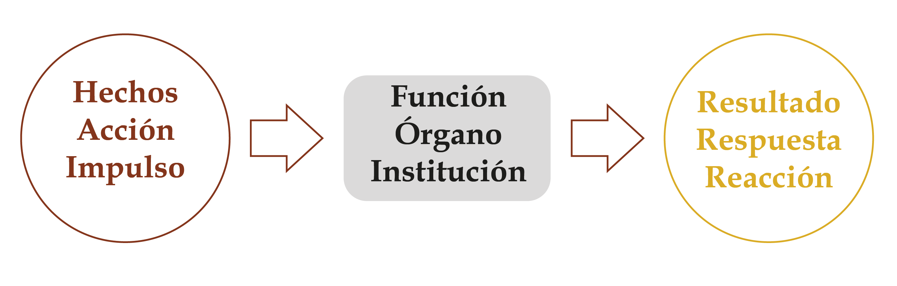
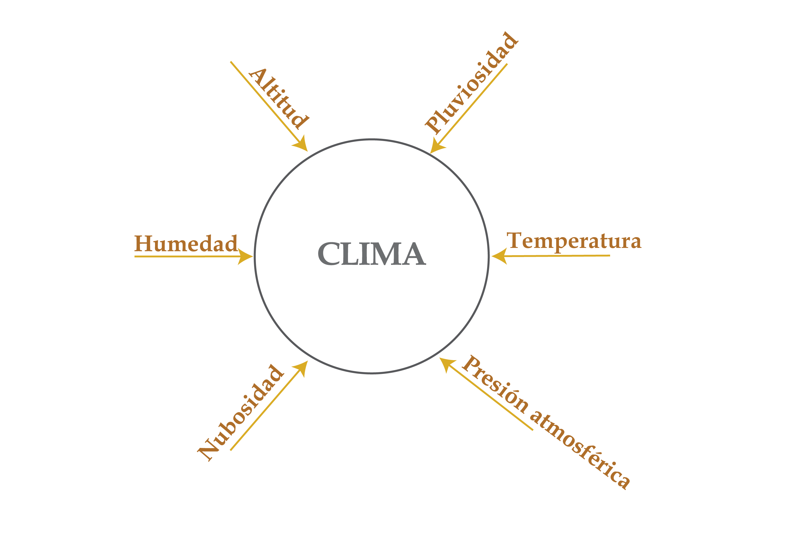
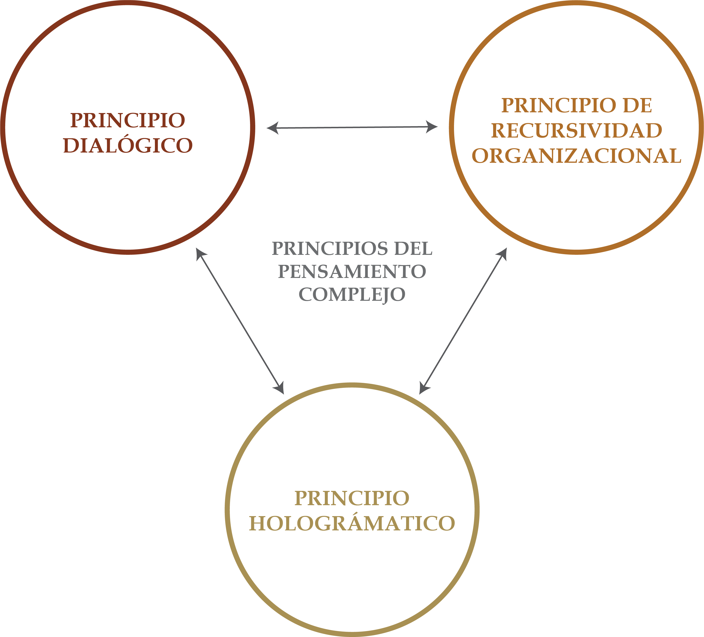

Unidad 1.1 Complejidad de las relaciones sociales
Bogotá, fundada hace casi cinco siglos, se extiende actualmente sobre cerca de 40.000 hectáreas de un amplio altiplano con características ambientales excepcionales. En ella viven cerca de ocho millones de personas, muchas de las cuales han logrado satisfacer sus necesidades básicas pese a las precarias condiciones económicas.
Bogotá suscita percepciones contrastantes: algunos la aman, se identifican con ella y contribuyen a la búsqueda de soluciones; otros la perciben como una ciudad insegura, pobre, sucia y segregada. Mientras algunos de sus habitantes consideran que la ciudad ofrece pocas oportunidades, miles de migrantes llegan en busca de ellas.
Los factores sociológicos, antropológicos, económicos, arquitectónicos, políticos, etc. influyen de manera decisiva en la configuración urbana y en aspectos como los sistemas de transporte, los servicios públicos, el espacio público, los equipamientos de salud, educación y la vivienda. En este sentido, la ciudad constituye la expresión física de su contexto sociocultural. Por ello, conocerla y comprenderla de manera integral representa un desafío altamente complejo.
Para afrontar este desafío, es necesario comprender cómo se construye el conocimiento y cómo interactúan las distintas perspectivas al intentar interpretar la realidad. Reconocer las diversas formas en que adquirimos, organizamos y validamos el conocimiento es fundamental para fortalecer la convivencia en la sociedad contemporánea, y construir civilidad.
La teoría del conocimiento, o epistemología, es la rama de la filosofía que estudia los fundamentos, la naturaleza, el origen, el alcance, la validez y los límites del conocimiento. Entre las diversas corrientes y enfoques del pensamiento occidental vinculados con el conocimiento se destacan la dialéctica, el enfoque transdisciplinario, el funcionalismo, el estructuralismo y el pensamiento complejo1, así como la teoría de grafos, el estudio de los símbolos y el papel de las emociones en la construcción del conocimiento.
1.1. La dialéctica
Desde la antigüedad, el pensamiento chino se basa en la relación complementaria y opuesta entre el Yin y el Yang. Esta unión de contrarios también aparece en la tradición occidental. Heráclito (535-475 a. C.), considerado el «padre de la dialéctica», sostuvo que la realidad surge de la tensión entre fuerzas opuestas. Más tarde, Platón (427-348 a. C.) empleó el método dialéctico para confrontar términos contradictorios y alcanzar una verdad.
Blaise Pascal (1623-1662), matemático, físico, filósofo y teólogo, sostenía que todo es «ayudado y ayudante» y «causado y causante». Por ello, afirmaba que no es posible comprender el todo sin relacionarlo con las partes, ni estas sin el todo.
Immanuel Kant (1724-1804) sostenía que las categorías del entendimiento son capacidades innatas del ser humano. Estas permiten comprender la relación entre el todo y las partes, la identidad y la contradicción entre «A» y «no A», y constituyen la base del pensamiento científico.
Friedrich Hegel (1770-1831) incorporó la dialéctica a un sistema filosófico centrado en el devenir, la contradicción y el cambio. Para él, la realidad se transforma de manera constante: una idea se enfrenta a su opuesto y, de esa contradicción, surge una síntesis que integra y supera ambas posiciones. También Karl Marx (1818-1883) aplicó la dialéctica al análisis de los procesos sociales y económicos. Friedrich Engels (1820-1895), por su parte, desarrolló el materialismo dialéctico, base filosófica del marxismo, según el cual la realidad es material y cambia mediante contradicciones.
1.2. El enfoque interdisciplinario
El enfoque interdisciplinario integra conocimientos y perspectivas de distintas disciplinas para comprender problemas de carácter social, ambiental, cultural, económico o político y proponer soluciones integrales. Sin embargo, este enfoque de conocimiento separa elementos que, en realidad, forman un todo. En lugar de relacionar los saberes, los estudian de forma aislada. El principal obstáculo para la interdisciplinariedad es la disyunción: separar los saberes y reducir lo complejo a elementos simples, en lugar de comprender el conjunto.
Para conocer al ser humano tendría que encontrar el cerebro o el organismo en la biología, el espíritu en la psicología, la sociedad en la sociología, las creencias en las diversas religiones, y, para descubrir la subjetividad humana, tendría que aproximarse a la literatura, a la novela, a la poesía. En fin, todas esas disciplinas contienen una parte de realidad humana; son como un conjunto de piezas desintegradas1 .
Este enfoque dificulta comprender la complejidad y deja a la academia, a las sociedades y a los Estados poco preparados para enfrentar fenómenos imprevistos 2. Por ello, la interdisciplinariedad solo tiene sentido cuando existe un pensamiento capaz de relacionar hechos, teorías e información que suelen permanecer dispersos o encerrados en cada disciplina.
1.3. Funcionalismo
El funcionalismo surgió en Inglaterra durante la década de 1930 como una corriente de las ciencias sociales, especialmente de la sociología y la antropología social. Según este enfoque, las instituciones, las normas y las reglas cumplen funciones que favorecen la supervivencia y la continuidad de la sociedad, así como la conservación de sus modelos culturales. Desde mediados del siglo XX, esta corriente ha ejercido una influencia significativa en las ciencias sociales.
Entre sus antecesores se encuentran Max Weber (1864-1920) y Émile Durkheim (1858-1917), quien concebía las culturas como conjuntos «integrados, funcionales y coherentes». Más adelante, Vilfredo Pareto (1848-1923), T. H. Marshall (1893-1981) y Robert Merton (1910-2003) desarrollaron ampliamente sus planteamientos.
Los funcionalistas conciben la sociedad como un «organismo»: un sistema articulado e interdependiente en el que cada parte cumple una función que contribuye a su integración y estabilidad. Por ello, las sociedades cuentan con normas, códigos y otros mecanismos que orientan la conducta individual, regulan los conflictos y preservan el equilibrio social. Por su parte, el sociólogo estadounidense Talcott Parsons (1902-1979), planteó que la interacción entre los individuos podía entenderse como un sistema social de acción y analizarse con herramientas teóricas similares a las empleadas en otras ciencias 3.
En este marco, la función es el conjunto de actividades que realiza una persona para satisfacer una o varias necesidades. El análisis de estas funciones permite explicar cómo los individuos contribuyen al equilibrio y a la transformación de la estructura social, así como la interdependencia entre los sistemas social, personal y cultural.
Un sistema social está compuesto por actores, situaciones, motivaciones, el entorno en el que ocurre la interacción y un conjunto de símbolos y valores propios de una cultura. Estos elementos dan origen a códigos y normas de comportamiento. En síntesis, el funcionalismo, especialmente en la obra de Parsons, concibe la sociedad como un sistema cuyas partes cumplen funciones específicas que contribuyen a su estabilidad.
Imagen 1. El Funcionalismo

Fuente: Elaboración Sociedad de Mejoras y Ornato de Bogotá1.4. Estructuralismo
A comienzos del siglo XX surgió en Europa, especialmente en Francia, la corriente filosófica llamada el estructuralismo. Este movimiento intelectual se apoyó en la lingüística estructural de Ferdinand de Saussure 4(1873-1913) y en los aportes de las escuelas de Praga y Moscú.
Saussure, considerado precursor del estructuralismo, afirmó que «el lenguaje implica a la vez un sistema establecido y una evolución; en cada momento es una institución actual y un producto del pasado» 5. También distinguió entre lengua y habla: la lengua es el sistema compartido por una comunidad, mientras que el habla es su uso individual.
La lengua puede compararse con un tablero de ajedrez: cada pieza adquiere sentido por su posición y por las reglas del juego. Del mismo modo, la lengua es un sistema convencional y arbitrario en el que los significantes —sonidos o imágenes acústicas— se relacionan con los significados —conceptos o imágenes mentales—.
El estructuralismo es una corriente filosófica y un enfoque de investigación en las ciencias sociales. Inspirados en Saussure, varios pensadores lo desarrollaron tras la Segunda Guerra Mundial. Desde entonces, se ha utilizado para estudiar y analizar las estructuras que organizan una cultura o una sociedad 6.
Las principales características de la estructura son: la autorregulación, la conservación, la transformación y la totalidad. Por autorregulación se entiende que las estructuras generan mecanismos para proteger a la sociedad de acciones que tratan de desarticular o desordenar lo ya establecido. La conservación se refiere a la idea de que las instituciones buscan conservar su existencia y legado, por lo cual ponen en marcha acciones para seguir perviviendo a pesar de los cambios inevitables. Por transformación se entiende que, la sociedad como organismo vivo, tiene que reconfigurar su naturaleza y adoptar nuevas tendencias y desechar otras que ya no le sirven para garantizar su pervivencia. Por último, por totalidad, se refiere a que la sociedad es un todo orgánico, en el cual sus partes no se pueden entender de manera separada, sino en su interrelación y en los roles que estos desempeñan en el todo.
Según el psicólogo estadounidense Howard Gardner, tres pioneros de la ciencia cognitiva que desarrollaron el estructuralismo fueron: Jean Piaget (1896-1980), Claude Lévi-Strauss (1908-2009) y el lingüista Noam Chomsky (1928- )7 .
El biólogo suizo Piaget es considerado como el fundador de la epistemología genética, disciplina que estudia el origen y el desarrollo del conocimiento humano. Claude Lévi-Strauss, antropólogo, filósofo y etnógrafo francés, sostuvo que todos los seres humanos comparten formas básicas de pensamiento y producen expresiones culturales comparables. Es considerado el padre de la «antropología estructural». Noam Chomsky, lingüista, intelectual y activista político estadounidense, ha centrado su obra en comprender la estructura del lenguaje humano y las reglas sintácticas que sustentan nuestras expresiones verbales.
Piaget, Lévi-Strauss y Chomsky pertenecen a la tradición racionalista y retoman ideas de René Descartes (1596-1650) e Immanuel Kant (1714-1804). Los tres consideran que la mente humana está organizada y funciona según reglas específicas. Estas estructuras pueden identificarse mediante el análisis sistemático del lenguaje, la conducta, las acciones y la resolución de problemas.
Aunque sus enfoques presentan diferencias, coinciden en que la mente posee una organización que puede estudiarse científicamente. Sin embargo, el estructuralismo tiende a concebir los sistemas como estructuras cerradas, lo que limita su aplicación al estudio de procesos dinámicos como la innovación y la creación.
Imagen 2. Estructuralismo

El todo es un todo orgánico, en el cual sus partes no se pueden entender de manera separada, sino en su interrelación y en los roles que estos desempeñan en el todo.
Fuente: Elaboración Sociedad de Mejoras y Ornato de Bogotá
1.5. El pensamiento complejo
El pensamiento complejo, propuesto por el filósofo, sociólogo y político francés Edgar Morin (1921-2026), surgió en un contexto marcado por la convergencia de dos revoluciones científicas.
La primera incorporó la incertidumbre al pensamiento científico mediante la termodinámica, la física cuántica y las ciencias sistémicas. Estas últimas buscan volver a relacionar lo que las disciplinas tradicionales habían separado y estudiar las interacciones entre los elementos.
La segunda revolución estuvo impulsada por las ciencias de la Tierra y la ecología científica. Esta última estudia los ecosistemas y la biosfera como conjuntos de componentes interdependientes que requieren aportes de la zoología, la botánica, la microbiología, la geografía y las ciencias físicas. Por su parte, las ciencias de la Tierra conciben el planeta como un sistema complejo que se autoproduce y se autoorganiza, y articulan disciplinas antes estudiadas de forma aislada, como la geología, la meteorología, la vulcanología y la sismología.
De estas revoluciones surgieron tres teorías estrechamente relacionadas que prepararon el camino para el pensamiento complejo: la teoría de la información, la cibernética y la teoría de sistemas.
La teoría de la información ayuda a reducir la incertidumbre frente a lo inesperado 8. En un contexto donde conviven el orden y el desorden, la información puede organizar un sistema, regular el uso de la energía y favorecer su autonomía.
La cibernética rompe con la causalidad lineal al sostener que la causa actúa sobre el efecto y este, a su vez, “retroactúa” sobre la causa. Así surge el feedback o bucle de retroalimentación: cuando A actúa sobre B, B también influye en A. Este mecanismo permite regular y mantener la autonomía de un sistema. La homeostasis 9, por ejemplo, se apoya en múltiples procesos de retroacción. Estas dinámicas pueden amplificar una reacción, como en una escalada de violencia, o contribuir a estabilizar el sistema.
La teoría de sistemas sostiene que “el todo es más que la suma de las partes”. La organización de un sistema produce cualidades emergentes que no existen en sus componentes aislados y que, a su vez, pueden influir sobre ellos. El agua, por ejemplo, posee propiedades distintas de las del hidrógeno y el oxígeno que la componen) 10.
A partir de estas teorías, Morin desarrolla en Introducción al pensamiento complejo sus conceptos fundamentales. Explica que la complejidad suele asociarse con confusión e incertidumbre. Aunque los enfoques simplificadores son útiles, resultan insuficientes cuando reducen fenómenos complejos a explicaciones únicas o unidimensionales.
Morin reconoce que las partes de un sistema social deben coordinarse para conservar cierto equilibrio. Sin embargo, critica al funcionalismo porque tiende a minimizar las disfunciones, las contradicciones y los conflictos, en contraste, con el pensamiento complejo que entiende la incertidumbre, la paradoja y la inestabilidad como rasgos propios de los sistemas sociales. También retoma del estructuralismo la idea de que la lengua y la cultura son sistemas de signos cuyas partes solo se comprenden en relación con el conjunto. No obstante, rechaza que los sistemas culturales puedan explicarse únicamente mediante sus estructuras internas, sin considerar el entorno ni los fenómenos nuevos que surgen de sus interacciones.
A diferencia del estructuralismo, que suele presentar las estructuras como entidades fijas y autónomas, el pensamiento complejo las concibe como realidades abiertas, dinámicas y en permanente relación con su entorno. Por ello, los sistemas sociales y culturales cambian continuamente y pueden producir fenómenos emergentes e imprevisibles.
Morin advierte que una adhesión estricta al funcionalismo o al estructuralismo puede simplificar en exceso la realidad. Al privilegiar la estabilidad y las reglas internas, estos enfoques pueden dejar de lado la creatividad, la libertad y el desorden presentes en los sistemas humanos. Comprender la sociedad y la cultura exige integrar el orden y el desorden, y permanecer abierto a la novedad y la transformación 11.
El pensamiento complejo no elimina la simplicidad, sino que la integra en una comprensión más amplia y multidimensional. El término complexus significa “lo que está tejido en conjunto”: una realidad es compleja cuando sus distintos elementos —económicos, políticos, sociales, psicológicos, afectivos o culturales— son inseparables y mantienen relaciones entre sí, con el contexto y con el conjunto. Así, la complejidad articula la unidad y la multiplicidad, y constituye uno de los principales desafíos de nuestra era12 .
Morin también destaca la necesidad de reconocer la incertidumbre. Ninguna teoría comprende por completo la realidad y siempre puede surgir algo inesperado. Por ello, el conocimiento debe revisar sus ideas y explicaciones, en vez de forzar los hechos nuevos dentro de teorías incapaces de explicarlos.
En síntesis, el pensamiento complejo entiende la realidad como una trama interconectada y cambiante. Para comprenderla, Morin propone tres principios:
1. El principio dialógico o de las polaridades relaciona ideas opuestas pero complementarias, como el orden y el desorden o la estabilidad y el cambio. Su objetivo es integrar estas tensiones para explicar los procesos de organización y transformación social.
2. El principio de recursividad señala que los efectos de un proceso pueden convertirse en sus causas. Los individuos producen la sociedad mediante sus interacciones, pero la sociedad también los forma al transmitirles lenguaje, cultura y normas. Se crea así un ciclo continuo de producción y retroalimentación.
3. El principio hologramático sostiene que la parte está en el todo y el todo está presente en cada parte. Cada célula contiene el patrimonio genético del organismo; de modo similar, cada individuo forma parte de la sociedad y refleja su lenguaje, su cultura y sus normas.
Imagen 3. La complejidad

Fuente: Elaboración Sociedad de Mejoras y Ornato de Bogotá
De esta manera, los aspectos como los sociales, culturales, económicos o ambientales, que conforman la ciudad están entrelazados de forma que un cambio en uno afecta a los demás. Así, al estudiar la ciudadanía y la civilidad, no sólo se consideran las leyes, normas o los sistemas que las regulan, sino también cómo las personas interactúan con su entorno, sus relaciones sociales, su historia y sus aspiraciones. Este enfoque complejo es un desafío para a ir más allá de los análisis convencionales y a buscar comprensiones más profundas y enriquecedoras de la vida urbana en Bogotá, reconociendo que cada elemento de la ciudad contribuye a un tejido social dinámico y en constante evolución.
1.6. Símbolos, esquemas y grafos
Un aporte central de las teorías estructuralista, funcionalista y del pensamiento complejo es reconocer que, en contextos significativos, el pensamiento humano opera mediante sistemas de símbolos 13. Los sistemas de símbolos, también llamados códigos de significado permiten producir y comunicar el pensamiento. Como son abiertos y creativos, hacen posible crear, corregir y transformar productos, sistemas e incluso nuevos universos de significado 14.
Construimos la realidad a partir de múltiples concepciones mentales o formas simbólicas. Para comprender y comunicar nuestras experiencias, combinamos estas formas de significado. Para el filósofo y sociólogo Ernst Cassirer (1874-1945), las formas simbólicas y el lenguaje no solo reflejan la realidad, sino que contribuyen a construirla. Los símbolos no son simples herramientas del pensamiento: constituyen su funcionamiento y permiten organizar nuestra experiencia del mundo.
La simbolización es inseparable de la imaginación y la creatividad: el ser humano vive en un universo simbólico y, mediante los símbolos, interpreta y recrea el mundo físico y cultural. Suzanne Langer (1895-1985), filósofa y educadora estadounidense, sostenía que las personas tienen una necesidad profunda de simbolizar, crear significados y dar sentido a su mundo.
Nelson Goodman (1906-1998) explicó esta evolución filosófica como una serie de cambios de enfoque: Kant trasladó la atención de la estructura del mundo a la de la mente; Clarence Irving Lewis (1883-1964), de la mente a los conceptos; y Cassirer, de los conceptos a los diversos sistemas simbólicos de las ciencias, la filosofía, las artes y el lenguaje cotidiano.
El esquema es otra forma de representación gráfica o simbólica. El término proviene del latín schema y designa una síntesis de ideas o conceptos que facilita la organización y comprensión de la información. Un mapa, por ejemplo, representa de manera simplificada un territorio, pero no es el territorio mismo; es una forma de interpretarlo. Del mismo modo, un organigrama o un esquema de la Constitución no son el Estado, sino representaciones que permiten comprender su organización.
La teoría de grafos permite visualizar y analizar las relaciones entre conceptos, entidades o componentes. Un grafo representa los elementos mediante nodos y sus conexiones mediante aristas, lo que facilita comprender de manera clara cómo se vinculan.
Esta herramienta resulta especialmente útil para el pensamiento complejo, pues permite identificar los componentes de un sistema y observar sus relaciones dentro del conjunto. Así, ayuda a detectar patrones y dinámicas que podrían pasar inadvertidos en análisis lineales.
1.7. El conocimiento y las emociones
El psicólogo Lev Vygotsky (1896-1934) vinculó el afecto con la inteligencia al sostener que las emociones motivan y orientan el pensamiento. En sus palabras: “Cada idea contiene una actitud afectiva transmutada hacia el trozo de realidad al cual se refiere” 15. Uno de sus principales aportes a la educación es la Zona de Desarrollo Próximo (ZDP), que explica cómo el aprendizaje avanza mediante la interacción social y la mediación cultural.
Según Vygotsky, los niños pasan de un pensamiento sincrético y confuso a asociaciones concretas y, finalmente, a conceptos abstractos. Desde los mitos y las relaciones de parentesco hasta el arte paleolítico o las obras del realismo académico, estas manifestaciones poseen grados semejantes de complejidad. En este sentido, “la mente salvaje es la mente de todos nosotros”16 .
De otra parte, Morin sostiene que lo cognitivo y lo afectivo son inseparables. Por eso propone pares dialógicos, como: afectividad/razón y sapiens/demens. No existe una racionalidad pura: la afectividad también está presente en las actividades más abstractas, incluida la pasión de los matemáticos por su disciplina.
La complejidad humana integra una faceta prosaica, vinculada con las tareas prácticas, técnicas y racionales, y una faceta poética, relacionada con la vida comunitaria, el afecto, el rito, la fiesta, la danza y la música. Ambas dimensiones se complementan. En palabras de Morin, no existe una razón superior que domine la emoción, sino una relación continua entre inteligencia y afecto; la capacidad de emocionarse también es necesaria para actuar racionalmente 17.
A partir de los avances de la psicología cognitiva y social, Daniel Kahneman (1934-2024) explicó que el pensamiento funciona mediante dos sistemas complementarios: uno rápido, intuitivo y emocional, y otro lento, deliberado y lógico. Sus aportes fueron reconocidos con el Premio Nobel de Economía en 2002 18.
Las investigaciones del neurocientífico portugués António Damásio (1944) muestran que los seres humanos no actuamos de forma exclusivamente racional. Las emociones y los sentimientos influyen en el comportamiento social y, a su vez, son moldeados por este.
Las emociones están profundamente arraigadas en el cerebro y se relacionan con el instinto de supervivencia desarrollado durante la evolución. Diversos estudios vinculan su funcionamiento con sistemas cerebrales específicos. El conocimiento y la toma de decisiones surgen de la integración entre emociones, sentimientos y razonamiento 19.
El arte permite expresar de forma sencilla los pensamientos más complejos.
Sección 1.1.2 La complejidad de las relaciones sociales Sección 1.1.3 Sistemas regulatorios y civilidad Sección 2.1.3 Código Nacional de Seguridad y Convivencia Ciudadana - Ley 1801 de 2016 Unidad 3.1 La demografía Sección 4.1.1 Geografía, las ciencias naturales y características físicas del territorio Sección 4.1.3 Las relaciones y determinantes ambientales del territorio Sección 4.2.2 Conflictos socioecológicos y justicia ambiental Sección 4.2.3 La sostenibilidad territorial en Bogotá Sección 4.3.1 Marco jurídico de desarrollo y Ordenamiento Territorial Sección 5.2.1 Sistema de equipamientos
Footnotes
-
Edgar Morin. Pensar la complejidad (Valencia: Universidad de Valencia, 2010), 176 ↩
-
Edgar Morin. Cambiemos de vida (Buenos Aires: Ediciones Paidós, 2020), 36. ↩
-
Talcott Parsons. El sistema social (Madrid: Alianza editorial, 1999), 6. ↩
-
El mayor aporte que hizo Saussure en su Curso de lingüística general fue la constitución de la lingüística como una ciencia. ↩
-
Ferdinand De Saussure. Curso de lingüística general. Traducción de Amado Alonso (Buenos Aires: Editorial Losada, 1945), 36–37. ↩
-
El estructuralismo tiene también como grandes referentes al biólogo suizo Jean Piaget, antropólogo francés Claude Levi-Strauss, al psicoanalista francés Jacques Lacan y al filósofo marxista francés Louis Althusser. ↩
-
Howard Gardner. Arte, mente y cerebro. Una aproximación cognitiva a la creatividad (Buenos Aires: Editorial Paidós, 1987), 24. ↩
-
La información que indica quién es el vencedor de una batalla resuelve una incertidumbre. ↩
-
Es la capacidad de un organismo para mantener un ambiente interno estable y relativamente constante, a pesar de las fluctuaciones del entorno externo. ↩
-
La teoría de sistemas ayuda a pensar las jerarquías de los niveles de organización, los subsistemas y sus imbricaciones, etc. ↩
-
Edgar Morin. Sociología (Madrid: Editorial Tecnos, 1995), 13-14. ↩
-
Edgar Morin. Los siete saberes necesarios para la educación del futuro (Bogotá: Ministerio de Educación Pública, 2000), 31. ↩
-
Howard Gardner. Arte, mente y cerebro. Una aproximación cognitiva a la creatividad (Buenos Aires: Editorial Paidós, 1987), 60. ↩
-
Ibid., 25. ↩
-
Lev Semenovch Vygotsky. Pensamiento y lenguaje: Teoría del desarrollo cultural de las funciones psíquicas (Buenos Aires: Ediciones Lautaro, 1964). ↩
-
Howard Gardner. Arte, mente y cerebro. Una aproximación cognitiva a la creatividad (Buenos Aires: Editorial Paidós, 1987), 48. ↩
-
Edgar Morin. Pensar la complejidad (Valencia: Universidad de Valencia, 2010), 181. ↩
-
Daniel Kahneman. Pensar rápido pensar despacio (Bogotá: Editorial Debolsillo, 2014), 23. ↩
-
Manuel Castells. Comunicación y poder (Ciudad de México: Siglo veintiuno Editores, 2012), 194. ↩